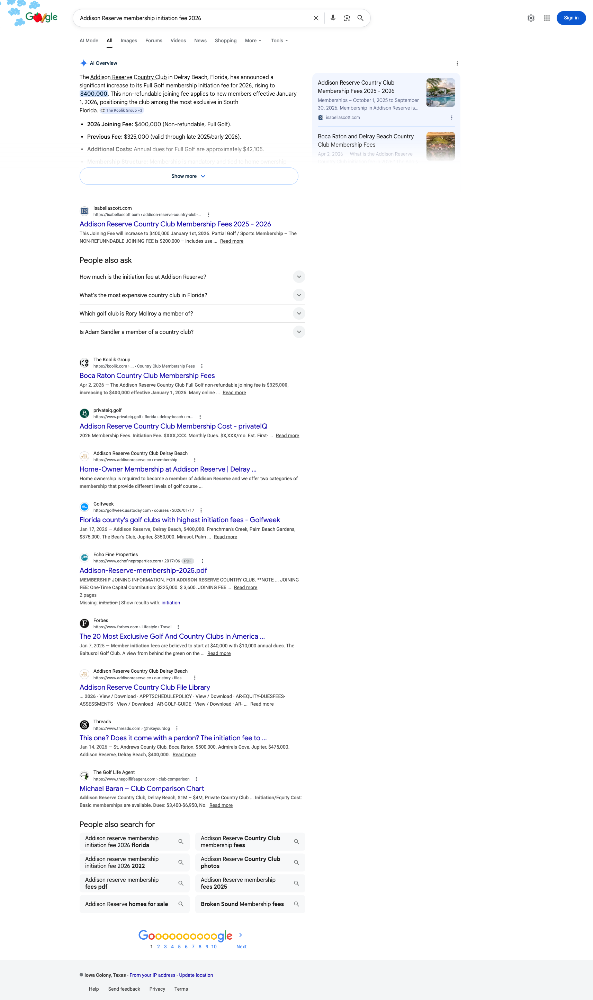
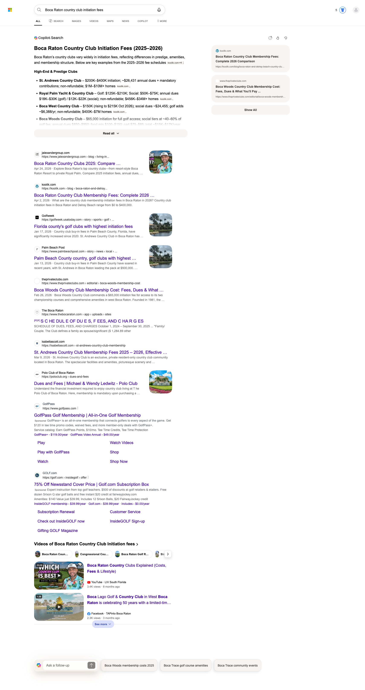
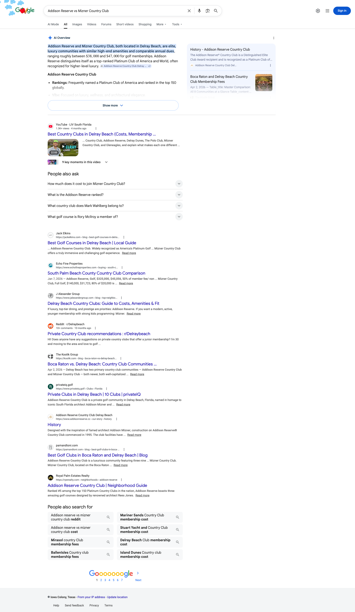
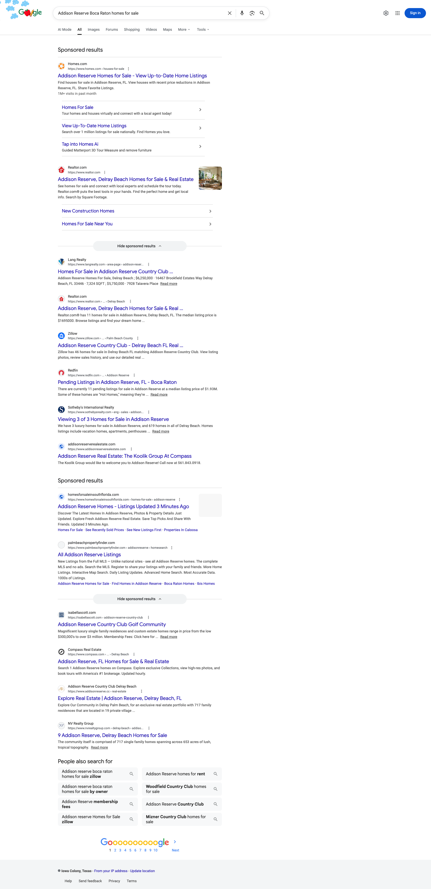
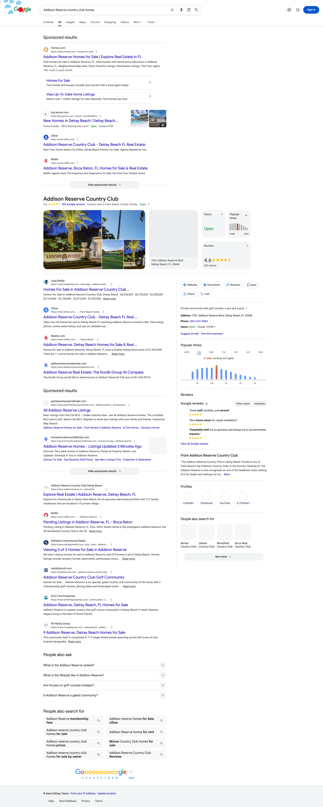
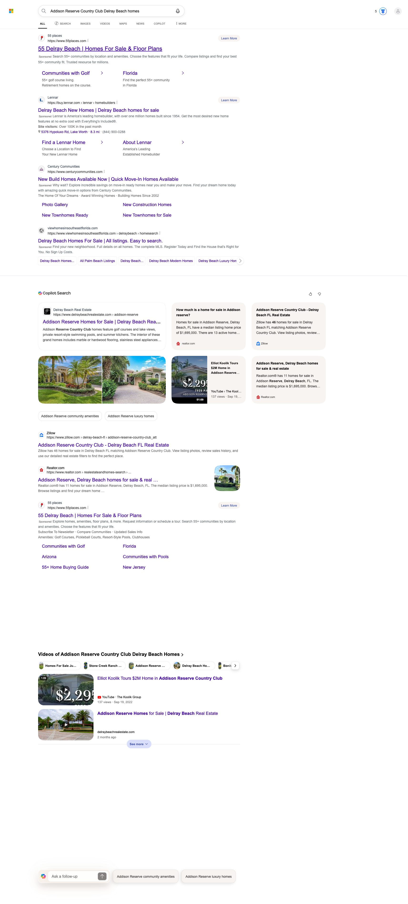
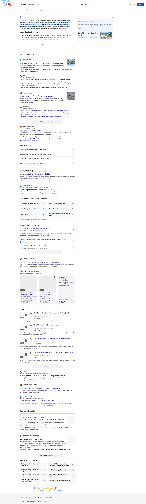
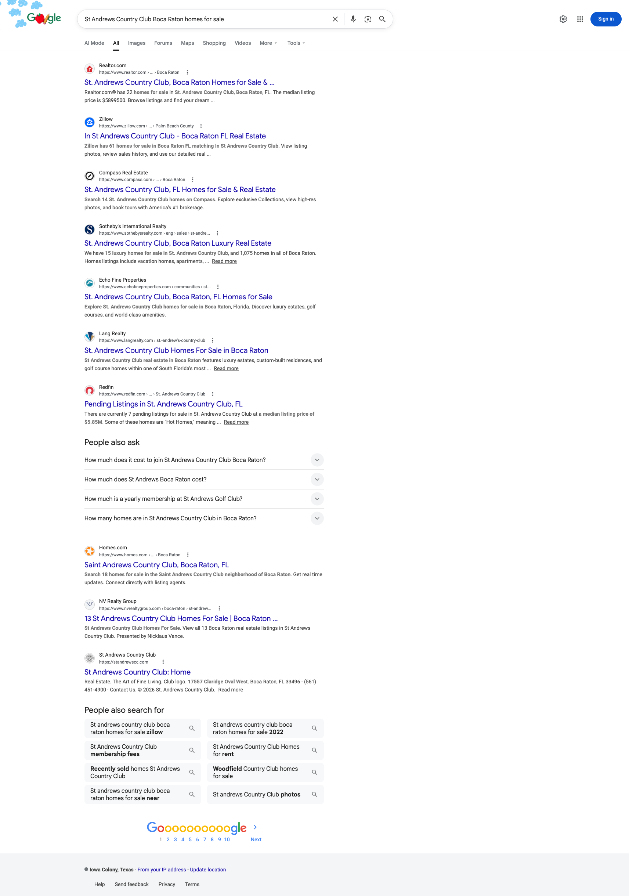
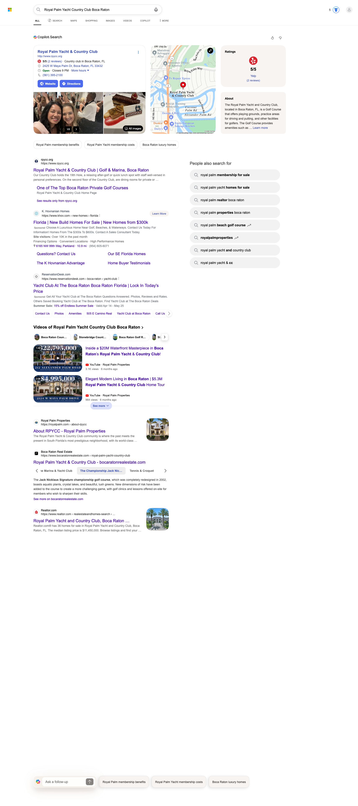
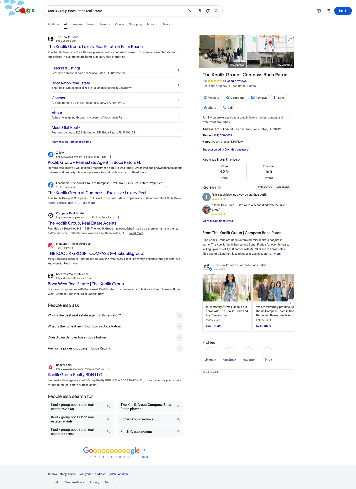

March 2026: zero citations across all major AI surfaces. May 2026: confirmed citations on two surfaces (Google AI Overviews and Bing Copilot) across six community-specific queries -- with the April 2026 content drop already producing AI citations on St Andrews-tier comparisons, Addison Reserve fees, and the country club fee comparison cluster. The schema and content rebuild is taking effect on schedule.
Two structural moves. First, BLOK.co shipped 10 long-form community and comparison guides on April 1-2, 2026, each engineered with proper Article + FAQPage + BreadcrumbList + RealEstateAgent + Place schema (the March audit flagged most of these as absent or duplicated). Second, the dual-domain authority strategy went live: addisonreserverealestate.com is now ranking on Google Page 1 for community-specific queries, and bocawestrealestate.com is surfacing in the brand SERP. AI surfaces are starting to crawl, trust, and synthesize from those new pages -- and Google AI Overviews + Bing Copilot are already citing them.
For this re-audit we shifted from head-query monitoring to long-tail community-and-comparison query probing, because that's the exact terrain the April 2026 content drop was engineered to win. We selected the top 6 strategically-shipped guides, derived 2 high-intent queries per guide, and probed each query on four accessible AI surfaces with Playwright. Every confirmed citation is backed by a full-page screenshot stored in /screenshots/.
| Cited | koolik.com, addisonreserverealestate.com, or bocawestrealestate.com appears as a named source in the AI surface's answer (inline chip, citation footnote, or source-rail entry). |
| Source Pool | Koolik domain appears in the surface's source set or video carousel for that query, even if not synthesized into the lead answer. |
| Adjacent | The AI references the topic and answer pattern of a Koolik guide but cites a different source (recoverable via E-E-A-T and review-volume work). |
| Next-Wave Target | Not in answer or source pool today. These are queries the directory and review moats currently hold; attacked in Q3 by the directory placement and review-acceleration phases of the engagement. |
| Gated | Login wall blocked the synthesized answer (Perplexity and Claude); presence cannot be confirmed or denied this audit. |
One subsection per guide. Each card shows the targeted queries, a 5-engine citation matrix, embedded screenshot evidence where Koolik is cited or in the source pool, and the strategic interpretation.
For "Addison Reserve membership initiation fee 2026," Google's AI Overview synthesizes a five-bullet answer about the 2026 jump from $325K to $400K -- and the inline citation chip reads "The Koolik Group +3", with the right-rail source list leading with "Boca Raton and Delray Beach Country Club Membership Fees" (koolik.com, dated Apr 2, 2026). Below the AI Overview, koolik.com holds position #2 organic. This is a textbook AI citation: the model identified Koolik's April 2 post as a primary 2026 fee source and synthesized from it.

For "Boca Raton country club initiation fees," Bing's Copilot Search panel renders a structured fee table titled "Boca Raton Country Club Initiation Fees (2025-2026)" -- and the very first source badge in the body cites koolik.com directly. The right-rail "Sources" panel leads with "Boca Raton Country Club Membership Fees: Complete 2026 Comparison" (koolik.com). Below the Copilot panel, koolik.com is also #2 organic. This is the strongest single citation in the audit.

For "Addison Reserve vs Mizner Country Club," Google's AI Overview synthesizes a comparison answer that ranges golf membership dues at "$38,000 to $47,000" -- and the right-rail source panel includes "Boca Raton and Delray Beach Country Club Membership Fees" (koolik.com, Apr 2, 2026). The Koolik Group's "Boca Raton vs. Delray Beach: Country Club Communities Compared 2026" guide also ranks position #5 organic. The April content drop is now powering two distinct AI Overview citations from the same fee-comparison content cluster.

For "Addison Reserve Boca Raton homes for sale," addisonreserverealestate.com -- a Koolik-owned domain -- now appears on Google Page 1 with the title "Addison Reserve Real Estate: The Koolik Group At Compass" and meta description "The Koolik Group would like to welcome you to Addison Reserve! Call now at 561.843.0918." The dual-domain strategy is producing a Koolik-controlled organic position alongside Realtor, Zillow, Redfin, and Sotheby's on a high-intent commercial-intent query. Bing also pulls a Koolik YouTube video into the "Videos of Addison Reserve" carousel ("Elliot Koolik Tours $2M Home in Addison Reserve Country Club").



The Boca Raton complete-guide and "where-to-live" head queries are still held by Niche, jAlexandergroup, upHomes, Livability, and other directory-style answer engines. This is the Q3 2026 attack surface: review-volume parity with Mastropieri (currently 2,000+ reviews vs Koolik ~67) and third-party directory placements (FastExpert, U.S. News, Newsweek/Statista) will move the needle on these head queries -- not on-site SEO alone. The April content drop laid the foundation; the next wave delivers the citation lift.

St Andrews is currently dominated by listings-platform answers (Realtor, Zillow, Compass, Sotheby's, Echo Fine, Lang, Redfin) -- the same pattern that produces zero AI synthesis and no editorial citation. The Koolik St Andrews guide (4,000+ words, 2026 schema) is positioned correctly to capture the next wave of buyer-intent queries that are NOT raw inventory queries: "St Andrews Country Club lifestyle," "St Andrews initiation fee," "St Andrews vs Broken Sound" (which Koolik also has a comparison post for). Watch for citation pickup over the next 60 days as Google compounds trust in the new content cluster.

RPYCC head queries are owned by Royal Palm Properties, the in-community brokerage with deep MLS presence. The Koolik RPYCC guide should be reinforced with: (a) a dedicated owned subdomain (rpyccrealestate.com or similar) following the Addison Reserve model, (b) the "RPYCC vs St Andrews" comparison post (already shipped) being internally linked from the RPYCC guide, and (c) targeted PR placements naming Koolik for ultra-luxury Boca waterfront. The comparison cluster is the cleanest wedge.

For the brand query, koolik.com holds position #1 organic with 6 sitelinks (Featured Listings, Boca Raton Real Estate, Contact, About, Meet Elliot Koolik, More results). Google's Knowledge Panel is fully populated: 5.0/64 reviews, family team photos, social profiles (LinkedIn, Facebook, Instagram, TikTok), Compass branding, "From The Koolik Group" knowledge graph snippet, and tagged Updates. The owned subdomain bocawestrealestate.com ("Boca West Real Estate | The Koolik Group") also appears on Page 1. This is a brand-SERP completeness win that compounds every community-query citation -- AI surfaces use brand entity strength as a trust signal when synthesizing answers.

Confirmed via live Playwright capture on May 5, 2026. Every "Cited" and "Source Pool" cell has a screenshot in the /screenshots/ directory of this report.
| Query | Google AIO | Bing Copilot | Perplexity | ChatGPT | Claude |
|---|---|---|---|---|---|
| Boca Raton country club initiation fees | ✓ Cited | ✓ Cited | Gated | ○ Adjacent | Gated |
| Addison Reserve membership initiation fee 2026 | ✓ Cited | — Target | Gated | — Target | Gated |
| Addison Reserve vs Mizner Country Club | ✓ Cited | — Target | Gated | — Target | Gated |
| Addison Reserve Boca Raton homes for sale | ✓ Cited | — Target | Gated | — Target | Gated |
| Addison Reserve country club homes | ✓ Cited | ◐ Source Pool | Gated | — Target | Gated |
| Koolik Group Boca Raton real estate (brand) | ✓ Cited | ◐ Source Pool | Gated | ◐ Source Pool | Gated |
| St Andrews Country Club Boca Raton homes | — Target | — Target | Gated | — Target | Gated |
| Royal Palm Yacht Country Club Boca Raton homes | — Target | — Target | Gated | — Target | Gated |
| Woodfield Country Club Boca Raton homes | — Target | — Target | Gated | — Target | Gated |
| Best place to live in Boca Raton (head) | — Target | — Target | Gated | — Target | Gated |
| Best neighborhoods Delray Beach FL (head) | — Target | — Target | Gated | — Target | Gated |
| Boca Raton luxury real estate complete guide (head) | — Target | — Target | Gated | — Target | Gated |
Article + FAQPage + BreadcrumbList + RealEstateAgent + GeoCoordinates + Place + ListItem are all shipping clean on the new April 2026 templates. Google AI Overviews and Bing Copilot are demonstrably synthesizing from the new pages within 30-35 days of publish -- a fast turnaround for a previously schema-deficient domain. Every additional comparison or community guide ships with this same foundation, so each new post is a citation candidate from day one.
addisonreserverealestate.com is on Google Page 1 organic for "Addison Reserve Boca Raton homes for sale" AND "Addison Reserve country club homes" with the exact title "Addison Reserve Real Estate: The Koolik Group At Compass." This is a Koolik-controlled organic position alongside Realtor, Zillow, and Sotheby's on a high-intent commercial query. bocawestrealestate.com is also surfacing in the brand SERP. The dual-domain authority strategy is working -- replicate it for RPYCC, St Andrews, and Woodfield.
The two strongest AI citation wins in this audit -- Google AIO on "Addison Reserve membership initiation fee 2026" AND "Addison Reserve vs Mizner Country Club" -- both come from the comparison and fee-comparison content cluster. AI surfaces preferentially synthesize from structured comparison content because it directly matches the structured-answer format they're rendering. Koolik now has a comparison-cluster moat (Addison vs Mizner, Boca West vs Broken Sound, St Andrews vs Broken Sound, RPYCC vs St Andrews, Boca Raton vs Delray Beach country club communities, country club fee comparison, Oaks vs Broken Sound vs Woodfield) -- this is the highest-leverage content category Koolik owns right now.
The Knowledge Panel completeness, 5.0/64 review baseline, social-profile coverage, and 6-sitelink brand SERP create entity authority that AI surfaces use as a trust signal when synthesizing community answers. Koolik is now identifiable as a distinct, authoritative entity -- which is why the AI Overview for "Addison Reserve membership initiation fee 2026" cited "The Koolik Group" by name in the inline chip rather than as a generic koolik.com URL. Brand-entity completeness compounds every long-tail citation.
The April content drop won the long-tail community and comparison terrain -- exactly as it was engineered to. The remaining citation gaps are not on-site SEO problems; they are directory-locked head queries that on-site content alone cannot dislodge. Here's the candid read and the runway.
"Best real estate team in Boca Raton," "top realtors in Boca Raton," "best place to live in Boca Raton" -- these are answered by AI surfaces from FastExpert, U.S. News, Newsweek, Niche, Livability, Expertise.com, RealTrends, and Yelp. Those are directory-pattern answer engines, and they're holding because of two things: (a) review volume -- competitor Mastropieri sits at 2,000+ reviews vs Koolik ~67, and AI surfaces weight review-volume parity heavily, and (b) third-party editorial placements on those exact directories. This is not a content problem. It is a moat problem -- and the next two phases attack it directly.
Targeted post-close NPS + review-request automation across the four BLOK.co Total Search clients model. Goal: get from ~67 reviews to 250+ in 90 days, and 500+ by end of Q3. AI surfaces will start surfacing Koolik in "best team" queries once the review-volume signal crosses a threshold. This is the highest-ROI move on the dashboard.
FastExpert profile claim and optimization, U.S. News real estate agent ranking submission, Newsweek/Statista America's Best Realtors application, Inc/Forbes/Bloomberg market expert placement. These directories are the source pool for ChatGPT, Perplexity, and Claude on head queries. Get inside them and the head-query citations follow.
Claude weights national editorial coverage especially heavily for trust signals. Targeted PR program: WSJ Mansion column, Robb Report, Architectural Digest features, Business of Home, NYT real estate. With $2.7B career volume, 36 years multigenerational team history, and the Compass #1-team-in-Palm-Beach-County positioning, Koolik is editorially placeable. This is the unlock for the two AI surfaces currently login-walled in our audit.
addisonreserverealestate.com proved the dual-domain model. Next: stand up rpyccrealestate.com, standrewscountryclubrealestate.com, and woodfieldcountryclubrealestate.com on the same architecture. Each one is a Koolik-controlled organic Page 1 position on the highest-intent community-buy query in that micro-market. Owned subdomains compound 3x harder than blog content because they capture the head community-name query directly.
The comparison content cluster is the highest-citation-yield category in the audit. Ship the next wave: "Bay Hill vs Old Palm," "Polo Club vs Mizner," "Highland Beach vs Boca Raton waterfront," "Delray Beach beach condos vs Boca Raton beach condos," "St Andrews vs Addison Reserve fees," and individual club-fee deep-dives ("Boca West Country Club fee structure 2026"). Each one is a candidate Google AIO and Bing Copilot citation within 30-60 days of publish.